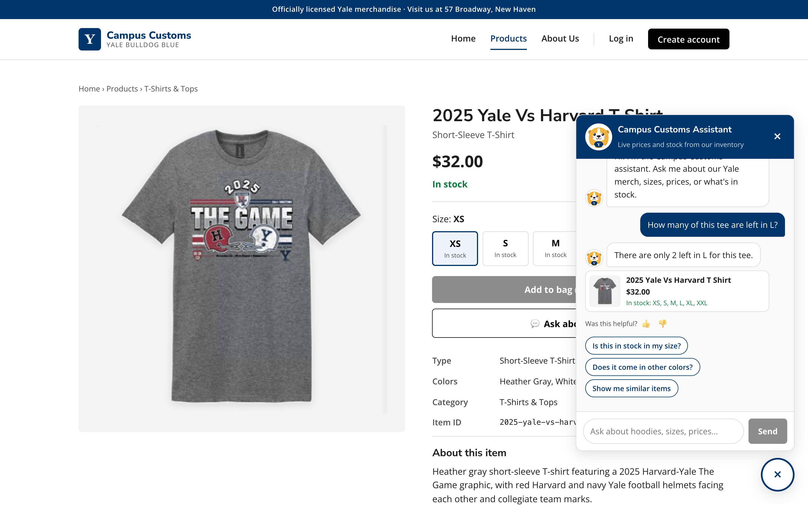
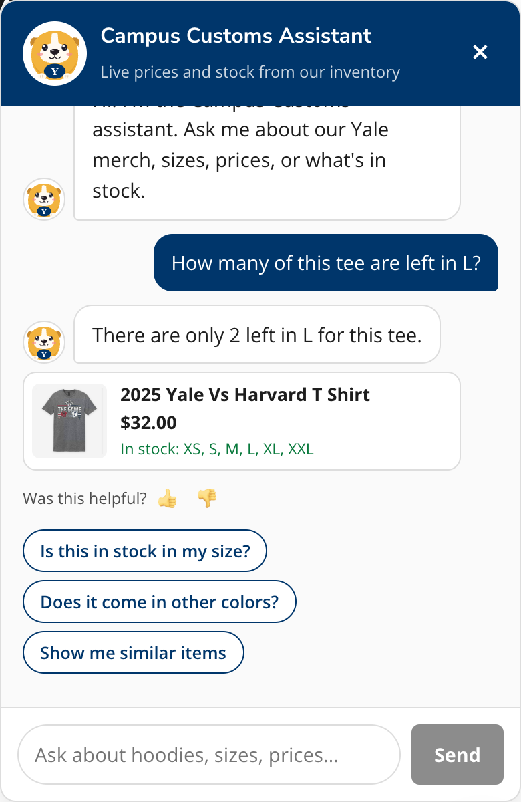
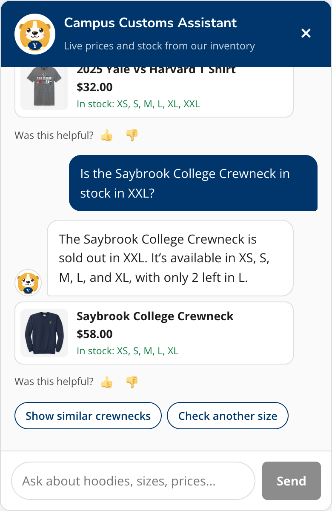
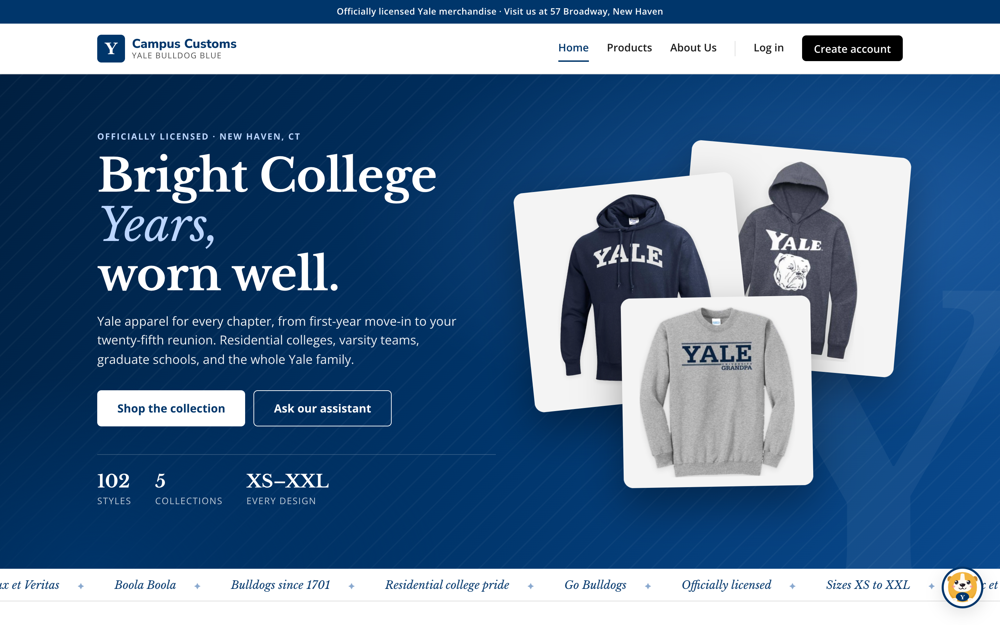
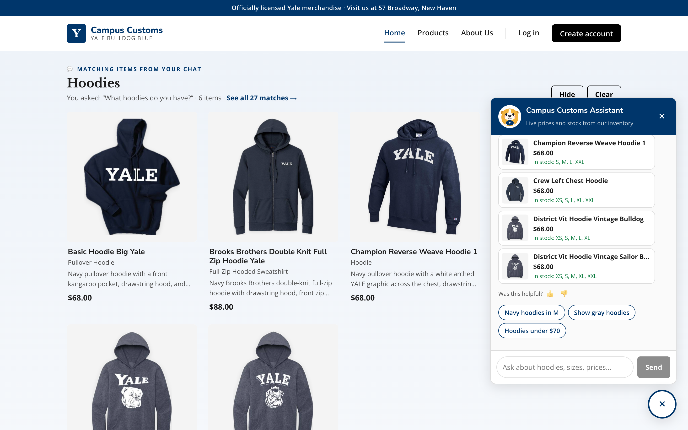
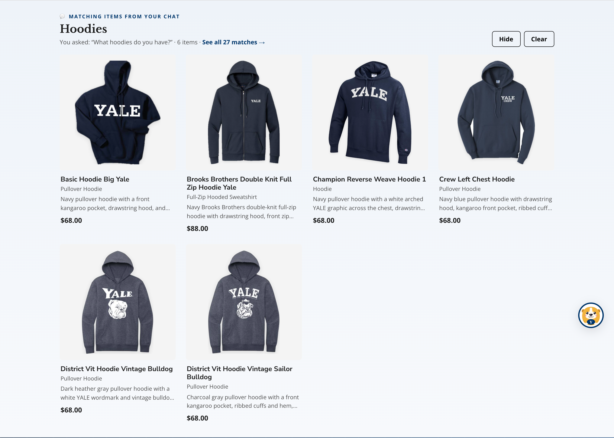
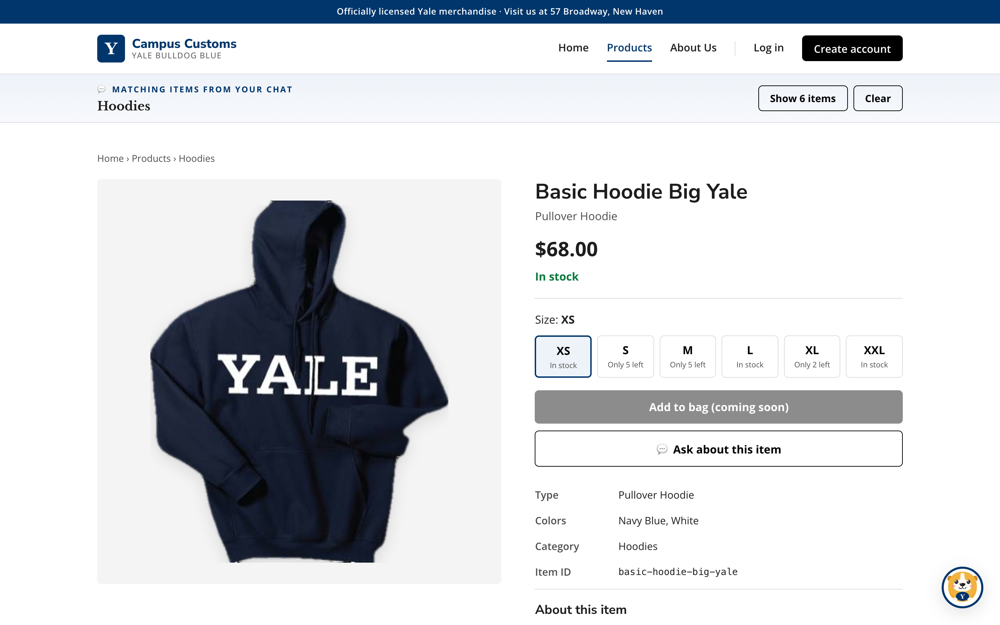
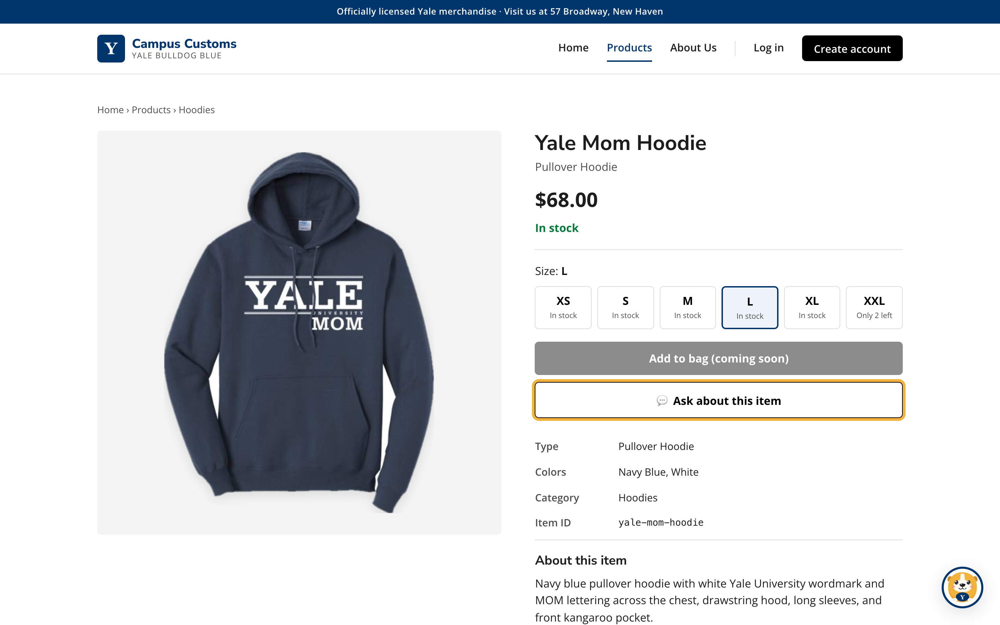
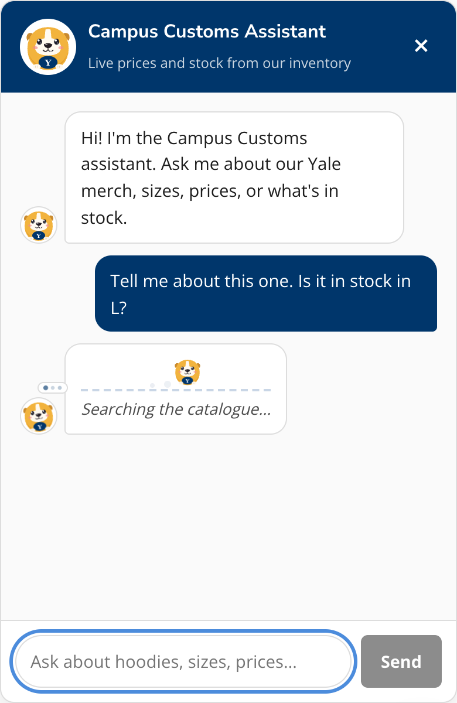
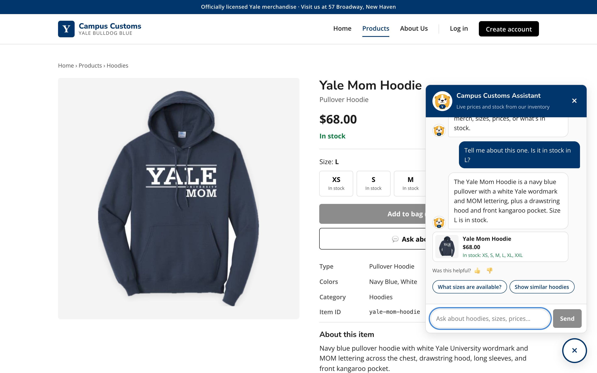

Summary
| # | What was tested | Result | Key evidence |
|---|---|---|---|
| 1 | Chat checks the inventory level of an item (honest stock and price from the DB) | PASS | "There are only 2 left in L for this tee." (DB: L = 2). Sold-out case: "The Saybrook College Crewneck is sold out in XXL." (DB: XXL = 0) |
| 2 | Dynamic search-result cards appear on the page after a category question (hoodies) | PASS | "What hoodies do you have?" → page section "Hoodies" with 6 product cards (all real hoodies, prices match the DB) + "See all 27 matches"; clicking a card opens its single-item page |
| 3 | A Problem 9 usability feature: "💬 Ask about this item" on a product page | PASS | One click asked "Tell me about this one. Is it in stock in L?"; the answer described the Yale Mom Hoodie and said L is in stock (DB: L = 25); the bulldog mascot shows a running and thinking animation while it works |
How to reproduce: start the backend (cd backend && uvicorn main:app --reload --port 8000) and the front end (cd frontend && npm run dev), open http://localhost:5173, and ask the same questions in the chat (💬 bottom right).
Test 1: Chat checks the inventory level PASS
On the 2025 Yale Vs Harvard T Shirt product page, the shopper asks the chat about stock in size L. The agent calls the check_stock / get_product tools, which read inventory.quantity from the database; a code check rejects any stock count or price that a tool didn't return.
Database ground truth: 2025 Yale Vs Harvard T Shirt (price $32.00)
| Size | XS | S | M | L | XL | XXL |
|---|---|---|---|---|---|---|
| Quantity in DB | 25 | 25 | 20 | 2 | 25 | 15 |
inventory.quantity = 2; the card in the chat shows the real price $32.00 and the sizes in stock.

Extra: an out-of-stock size is stated clearly
| Size | XS | S | M | L | XL | XXL |
|---|---|---|---|---|---|---|
| Quantity in DB | 15 | 15 | 15 | 2 | 15 | 0 |

Test 2: Dynamic search-result cards on the page PASS
On the Home page, the shopper asks a category question. The agent searches the catalogue and returns structured product matches (product_ids + results_title); the backend builds ProductCards from the database; the website renders them on the page as product cards (image, name, type, short description, price) in a "Matching items from your chat" section, and also as small cards in the chat.



Cards checked against the database
| # | Card name | DB garment_type | DB price | Price on card | Match |
|---|---|---|---|---|---|
| 1 | Basic Hoodie Big Yale | pullover hoodie | $68.00 | $68.00 | ✓ |
| 2 | Brooks Brothers Double Knit Full Zip Hoodie Yale | full-zip hooded sweatshirt | $88.00 | $88.00 | ✓ |
| 3 | Champion Reverse Weave Hoodie 1 | hoodie | $68.00 | $68.00 | ✓ |
| 4 | Crew Left Chest Hoodie | pullover hoodie | $68.00 | $68.00 | ✓ |
| 5 | District Vit Hoodie Vintage Bulldog | pullover hoodie | $68.00 | $68.00 | ✓ |
| 6 | District Vit Hoodie Vintage Sailor Bulldog | pullover hoodie | $68.00 | $68.00 | ✓ |
All 6 are hoodies; the database has 27 hoodie styles in total, matching "See all 27 matches".
Clicking a card still opens the single-item page (Problem 3 behavior)

/products/basic-hoodie-big-yale: large image on the left; price, stock, size picker, and description on the right. The chat results collapse to a slim bar at the top so the product comes first. Proves: A card placed on the page by the chat still opens the single-item page (large image + full info) from Problem 3.Test 3: Problem 9 usability feature, "Ask about this item" PASS
Every product page has a 💬 Ask about this item button. One click opens the chat and asks about that product in the size selected on the page, so the shopper doesn't have to type or describe the item. While the agent works, the bulldog mascot trots across a little track and shows a thought cloud, with progress text.
| Size | XS | S | M | L | XL | XXL |
|---|---|---|---|---|---|---|
| Quantity in DB | 25 | 8 | 8 | 25 | 8 | 2 |
inventory.quantity = 25 (price $68.00).


Generated from a live run of the app; agent answers and database values above are copied from that run. The full list of usability features is in usability.md; design notes are in design.md.